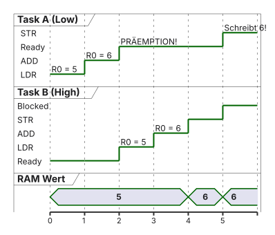
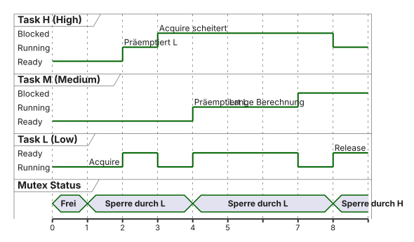
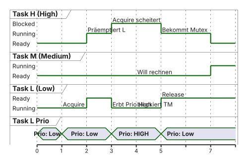

sequenceDiagram
participant Hardware as SPI Hardware
participant ISR as Hardware ISR
participant OS as OS Scheduler
participant Task as Verarbeitung (Task)
Note over Task: Blocked (Wartet auf Acquire)
Hardware->>ISR: Interrupt (Daten da!)
ISR->>OS: osSemaphoreRelease()
Note over OS: Zähler = 1
OS->>Task: Task wird Ready
Note over Task: Task wird Running (Präemption)
Task->>Task: Acquire rutscht durch (Zähler = 0)
Note over Task: Verarbeitet die Daten aufwendig!
04 · Synchronisation und Ressourcenverwaltung
Race Conditions, Mutexe, Deadlocks und Priority Inversion · EZS · DHBW Stuttgart
Prof. Dr.-Ing. Daniel Klünder
Willkommen auf der dunklen Seite der Echtzeit!
- Herzlich willkommen zum 4. Termin unserer Vorlesung
- Letzte Woche: FreeRTOS installiert und Präemption gefeiert
- Heute: Warum genau diese Präemption das System zerstören kann
- Leitfrage: Was passiert, wenn zwei Tasks gleichzeitig auf dieselbe Hardware zugreifen?
- Werkzeuge: Semaphoren und Mutexe, um das Chaos zu verhindern
Agenda für heute
- Recap: Die Macht der Präemption
- Race Conditions und geteilte Ressourcen
- Assembler-Ebene: Warum
counter++crasht - Lösungsansätze: Spinlocks vs. Interrupt-Sperren vs. OS-Blocking
- Semaphoren und Mutexe
- Deadlocks, Priority Inversion und Mars Pathfinder (PIP)
Recap: Die Macht der Präemption
- Präemptives Scheduling: Das OS (SysTick) kann einer laufenden Task jederzeit die CPU entreißen
- Die unterbrochene Task merkt davon nichts
- Pause exakt am aktuellen Program Counter (PC)
- CPU-Register werden auf den Stack gerettet
- Diese Asynchronität ist gewollt — und extrem gefährlich
Motivation: Der Kampf um den UART
- Szenario auf dem STM32:
Task_Temp(Prio Normal) sendet:"Temperatur: 22 Grad\n"Task_Hum(Prio High) sendet:"Feuchtigkeit: 40 %\n"
- Beide rufen
printf()auf — byteweise Schreiben auf dasselbe UART-Register
Das visuelle Chaos
Task_Tempbeginnt:> Temp- SysTick feuert —
Task_Hum(High) präemptiert Task_Humschreibt fertig:> TempFeuchtigkeit: 40 %Task_Humschläft;Task_Tempschreibt den Rest- Ergebnis:
> TempFeuchtigkeit: 40 %eratur: 22 Grad— Buchstabensalat
Das Problem geteilter Ressourcen
- UART ist eine Shared Resource (geteilte Ressource)
- Unabgesprochener Zugriff mehrerer Tasks — Datenkorruption
- Typische Shared Resources in Embedded Systems:
- Peripherie-Register (UART, SPI, I2C)
- Hardware (Displays, Motoren)
- Globale Variablen (Arrays, Structs, Fehlerzähler)
- Dynamischer Speicher (
malloc/free)
Lernziele des heutigen Tages
- Race Condition auf Assembler-Ebene erklären
- Unterschied Spinlocks vs. OS-Blocking verstehen
- CMSIS-API für Semaphoren und Mutexe kennen
- Wissen, warum Mutexe Ownership besitzen und Semaphoren nicht
- Priority Inversion und Priority Inheritance kennen
Was ist eine Race Condition?
- Race Condition (Wettlaufsituation):
- Verhalten hängt unvorhersehbar von der zeitlichen Reihenfolge ab
- Code „funktioniert meistens“, crasht aber selten (Heisenbug)
- Auslöser: asynchrone Präemption während einer Datenmanipulation
Das simpelste Code-Beispiel
- Globale Variable:
volatile uint32_t error_counter = 5; - Task A (Low) und Task B (High) melden beide einen Fehler
- Beide rufen
error_counter++;auf - War der Wert
5, erwarten wir danach7
Der Blick unter die Haube (Assembler)
- In C wirkt
counter++wie ein Befehl - ARM ist Load/Store: kein direktes „Erhöhe-RAM“
- Compiler übersetzt in Read-Modify-Write (3 Befehle):
LDR: Wert aus RAM in Register (\(R0 = 5\))ADD: Register in der ALU erhöhen (\(R0 = 6\))STR: Register zurück in den RAM schreiben
- Was, wenn Präemption genau zwischen
LDRundSTRzuschlägt?
Visualisierung der Datenkorruption

- Task B schreibt
6; Task A überschreibt danach mit veralteter6— die7ist verloren
Atomarität (Die Lösung des Problems)
- Ein Code-Block muss atomar ausgeführt werden
- Atomar (griech. atomos = unteilbar): keine Unterbrechung, kein sichtbarer Zwischenzustand
- Sobald Task A ausliest, darf keine andere Task lesen/schreiben, bis Task A gespeichert hat
- Frage: Wie erzwingen wir Atomarität in C?
Definition der Begriffe
- Kritische Variable (Shared Resource): Daten, die geschützt werden müssen
- Kritischer Abschnitt (Critical Section): Code, der atomar auf die Ressource zugreift
- Ziel: nur die Critical Section absichern — nicht die ganze Task
Schutzidee 1: Der Spinlock (Polling)
- Idee aus der Bare-Metal-Welt: Flag
lock - Vor Zugriff: prüfen, ob
lock == 0, dann auf1setzen - Achtung: Check-then-Set auf
lockselbst ist eine Race Condition (benötigt atomares Test-and-Set /LDREX/STREX) - Frage: Warum ist das im RTOS trotzdem eine Katastrophe?
Warum Spinlocks im RTOS crashen
- Spinlocks verstoßen gegen RTOS-Regeln
- CPU verbrennen: wartende Task bleibt Running (nicht Blocked), \(100\%\) Last
- Deadlock-Szenario:
- Task L (Low) setzt
lock = 1 - Task H (High) präemptiert und spinnt auf
lock - H gibt CPU nie ab — L kommt nie zu
lock = 0
- Task L (Low) setzt
- System friert ein; Watchdog schlägt zu
Schutzidee 2: Interrupts sperren
Die Grenzen der Interrupt-Sperre
- Vorteil: extrem schnell (oft 1 Taktzyklus)
- Nachteil: zerstört harte Echtzeit
- 5 ms IRQ-Sperre: kein UART-RX, kein Motor-Timer, kein Not-Halt
- Best Practice:
- Nur für extrem kurze Zugriffe (eine Variable)
- Niemals für lange
printf()oder Delays
Die „richtige“ Lösung: OS-Blocking
- Nicht
while()und nicht Hardware-Sperren - Lösung über den RTOS-Scheduler
- An das OS: „Schloss belegt? Dann blockiere mich, bis es frei ist.“
- Wartende Task → Blocked (\(0\%\) CPU)
- Freigabe weckt die wartende Task
- Werkzeuge: Semaphoren und Mutexe
Zusammenfassung Block 1
- Asynchrone Präemption + Shared Variables → Race Conditions
- C-Befehl wird zu
LDR/ADD/STR— Datenverlust möglich - Critical Sections müssen atomar abgesichert sein
- Spinlocks: CPU-Brand und Deadlocks
- Interrupt-Sperren: Latenzgarantien zerstört
- Saubere Lösung: OS-Blocking (nächster Block: Semaphoren)
Was ist ein Semaphor?
- Griechisch: „Zeichenträger“ (sema = Zeichen, pherein = tragen)
- Historisch: Eisenbahn-Signalflügel (frei / Halt)
- IT (Edsger W. Dijkstra, 1965):
- Vom OS verwaltete Integer-Variable (Zähler)
- Zwei atomare Operationen: Acquire (Nehmen) und Release (Freigeben)
Typ 1: Counting Semaphore (Zähl-Semaphor)
- Zähler von \(0\) bis \(N\)
- Analogie: Parkhaus mit \(N = 50\) Plätzen
- Acquire: Auto rein \(\rightarrow\) Zähler sinkt
- Zähler \(= 0\): Schranke zu, weitere Tasks Blocked
- Release: Auto raus \(\rightarrow\) Zähler steigt, Wartende werden geweckt
- Einsatz: begrenzte Ressourcen (z. B. Pool aus 3 Verbindungen)
Typ 2: Binary Semaphore (Binärer Semaphor)
- Spezialfall mit Max-Wert \(N = 1\)
- Zähler nur \(0\) (belegt) oder \(1\) (frei)
- Analogie: Toilettenschlüssel an der Tankstelle
- In FreeRTOS/CMSIS meist binär genutzt
CMSIS-API für Semaphoren
Was exakt passiert bei Acquire / Release?
Acquire (Schlüssel holen)
- OS prüft Zähler
- \(\ge 1\): Zähler \(-1\), Task läuft weiter
- \(== 0\): Task Running \(\rightarrow\) Blocked
Release (Schlüssel zurück)
- OS erhöht Zähler um 1
- Wartende Task in Blocked-Liste?
- Ja: höchstpriore \(\rightarrow\) Ready (ggf. Präemption)
Der Hauptanwendungsfall: Signalisierung
- Binärer Semaphor in FreeRTOS selten zur Absicherung
- Primär: Signalisierung (Einweg-Kommunikation)
- Deferred Interrupt Processing:
- ISR muss kurz bleiben
- ISR ruft nur
Release() - Wartende Task (
Acquire) übernimmt die Arbeit
Sequenzdiagramm: Signalisierung aus der ISR
Semaphoren haben kein „Ownership“
- Kein Besitzrecht: OS merkt sich nicht, wer Acquire gemacht hat
- Task A: Acquire; Task B: Release — erlaubt!
- Für Signalisierung (ISR \(\rightarrow\) Task) genial
- Für Variablen-/UART-Schutz: Sicherheitsrisiko
- Fremdtask kann Schloss versehentlich „aufbrechen“
Die Rettung: Der Mutex (Mutual Exclusion)
- Mutex = gegenseitiger Ausschluss
- Konzeptionell binärer Semaphor, aber mit Ownership
- Eiserne Regel: nur die sperrende Task darf entsperren
- Fremde Task/ISR wird abgewiesen
- Perfekt für Critical Sections
CMSIS-API für Mutexe
// 1. Definition
osMutexId_t uartMutex;
uartMutex = osMutexNew(NULL);
void PrintTask() {
for(;;) {
osMutexAcquire(uartMutex, osWaitForever);
// --- CRITICAL SECTION ---
printf("Temperatur: 22 Grad\n");
// --- END CRITICAL SECTION ---
osMutexRelease(uartMutex);
osDelay(500); // Ticks; bei 1000 Hz = 500 ms
}
}Sonderfälle in der C-Programmierung
- Was ist an diesem Code tödlich?
- Antwort: Mutex bleibt für immer verriegelt
- Früher oder später: Deadlock im System
- Achtung bei frühem
return/breakin Critical Sections
Best Practices für Mutexe
- So kurz wie möglich in der Critical Section bleiben
- Niemals in einer Critical Section
osDelay()aufrufen - Niemals Mutex-Acquire in einer Hardware-ISR
- verboten / undefiniert bzw. Assert (ISR kann nicht Blocked werden)
- In ISRs: Semaphoren oder Queues, keine Mutexe
Rekursive Mutexe
- Was passiert, wenn eine Task eine Funktion aufruft, die einen Mutex sperrt, und diese wiederum denselben Mutex anfordert?
- Normaler Mutex: Self-Deadlock — die Task blockiert sich selbst
- Rekursiver Mutex:
- OS merkt sich den Owner
- Erneutes Acquire durch denselben Owner:
count++statt Blockade - Freigabe erst, wenn
Releasegenauso oft wieAcquire(count == 0)
- Nutzen: verschachtelte Bibliotheken (z. B. Dateisysteme)
Zusammenfassung: Mutex vs. Binärer Semaphor
| Eigenschaft | Binärer Semaphor | Mutex (Mutual Exclusion) |
|---|---|---|
| Hauptzweck | Signalisierung (ISR \(\rightarrow\) Task) | Absicherung (Ressourcenschutz) |
| Ownership | Nein | Ja (nur Besitzer entsperrt) |
| Verwendung in ISR? | Ja (Release weckt Task) |
Nein (verboten / Assert) |
| Priority Inheritance? | Nein | Ja (dazu gleich mehr) |
| Gefahr | Fremdtask öffnet Schloss versehentlich | Priority Inversion (ohne OS-Schutz) |
Die Katastrophe: Wenn Locks böse werden
- Mutexe schützen Daten — erzeugen aber zwei gefürchtete Fehlerbilder:
- Deadlocks (Verklemmung)
- Priority Inversion (Prioritätsinversion)
- Oft erst nach Wochen im Feldtest sichtbar
- Zerstören das Vertrauen in Echtzeitgarantien
Der Deadlock (Verklemmung)
- Deadlock: Tasks warten zirkulär aufeinander — niemand kommt weiter
- Beispiel:
- Task 1 sperrt Mutex A
- Präemption → Task 2 sperrt Mutex B
- Task 2 will Mutex A \(\rightarrow\) Blocked
- Task 1 will Mutex B \(\rightarrow\) Blocked
- Ergebnis: System Freeze
graph TD
T1[Task 1]
T2[Task 2]
M1[Mutex A]
M2[Mutex B]
T1 -->|hält| M1
T2 -->|hält| M2
T1 -->|wartet| M2
T2 -->|wartet| M1
style T1 fill:#FFFFFF,stroke:#E2001A,stroke-width:2px !important
style T2 fill:#FFFFFF,stroke:#E2001A,stroke-width:2px !important
style M1 fill:#F5F5F7,stroke:#1D1D1F,stroke-width:1px !important
style M2 fill:#F5F5F7,stroke:#1D1D1F,stroke-width:1px !important
Die vier Coffman-Bedingungen
- Ein Deadlock entsteht nur, wenn alle vier gleichzeitig gelten:
- Mutual Exclusion — Ressource nicht teilbar
- Hold-and-Wait — Task hält A und wartet auf B
- No Preemption — gehaltene Locks werden nicht entzogen
- Circular Wait — zyklische Warteschlange
- Unsere Regeln brechen genau diese Kette:
- Regel 1 (keine Schachtelung) \(\rightarrow\) kein Hold-and-Wait
- Regel 2 (globale Reihenfolge) \(\rightarrow\) kein Circular Wait
Vermeidung von Deadlocks
- Regel 1: Keine geschachtelten Mutexe (bricht Hold-and-Wait)
- Niemals einen zweiten Mutex anfordern, solange einer gehalten wird
- Regel 2: Strikte Anforderungsreihenfolge (bricht Circular Wait)
- Wenn Schachtelung unvermeidbar: alle Tasks fordern Mutexe in derselben globalen Reihenfolge an (erst A, dann B)
- So kann Task 2 niemals B sperren, solange A schon belegt ist
Der subtile Feind: Priority Inversion
- Deadlock: System steht — offensichtlich
- Priority Inversion: System läuft weiter, aber Echtzeitgarantien der wichtigsten Task sind zerstört
- Abgrenzung Starvation vs. Priority Inversion:
- Starvation: Scheduler gewährt der Task nie CPU (reine Prioritäts-/Ready-Problematik)
- Priority Inversion: High blockiert indirekt über Mutex + mittelpriore Task
- Setup:
- Task L (Low), Task M (Medium), Task H (High)
- Ein Mutex, den nur L und H teilen
- M braucht den Mutex nicht
Die Anatomie der Inversion (Schritt 1 und 2)
- Task L ist Running und sperrt den Mutex (Critical Section)
- Task H wacht auf und präemptiert L
- Task H: Acquire scheitert \(\rightarrow\) Blocked (L hält das Schloss)
- Scheduler gibt CPU an L zurück, damit L freigeben kann
- Bis hierhin: normale, gewollte Blockade
Die Anatomie der Inversion (Schritt 3 und 4)
- Task L rechnet noch (hält den Mutex)
- Task M wacht auf und präemptiert L (\(Prio_M > Prio_L\))
- Task M braucht den Mutex nicht — lange Berechnung
- Drama:
- M blockiert L
- L kann den Mutex nicht freigeben
- H (wichtigste Task!) wartet unbegrenzt in der Queue
Visualisierung der Priority Inversion

Warum ist das so katastrophal?
- Verzögerung von Task H ist nicht mehr durch eine WCET begrenzt
- Jede aufwachende Medium-Prio-Task verlängert die Wartezeit von H
- Harte Echtzeitgarantien brechen (Deadline Miss)
- Genau dieses Muster trat 1997 auf dem Mars auf
Die reale Katastrophe: Mars Pathfinder (1997)
- Juli 1997: Pathfinder landet mit Rover Sojourner auf dem Mars
- Wenige Tage später:
- Bordcomputer friert ein
- Hardware-Watchdogs lösen aus
- Wiederholte Resets (Reset-Loop)
- Ein Totalverlust drohte
Die Architektur des Pathfinder
- Betriebssystem: VxWorks (präemptives RTOS)
- Tasks (stark vereinfacht):
- Bus-Manager (Task H): höchste Prio, zeitkritischer Informations-Bus
- ASI/MET (Task L): niedrige Prio, Wetter-/Atmosphärendaten auf den Bus
- Kommunikation (Task M): mittlere Prio, formatiert Funkpakete zur Erde
- Bus durch Mutex geschützt; M fasst den Mutex nicht an
Was auf dem Mars passierte
- ASI/MET (Low) sperrt den Bus-Mutex
- Bus-Manager (High) wacht auf, Acquire scheitert \(\rightarrow\) Blocked
- Kommunikation (Medium) präemptiert Low und rechnet lange
- Watchdog: Sicherheits-Timer erwartet regelmäßiges Lebenszeichen des Bus-Managers
- Bus-Manager bleibt Blocked \(\rightarrow\) Timer läuft ab \(\rightarrow\) Hardware-Reset
Die Lösung: Wie rettete die NASA die Sonde?
- VxWorks hatte bereits einen Schutz — standardmäßig deaktiviert (CPU-Overhead sparen)
- NASA lud über \(\approx 300\) Millionen km Funkstrecke einen C-Patch hoch
- Patch aktivierte ein Flag bei der Mutex-Erstellung
- Feature-Name: Priority Inheritance Protocol (PIP)
Das Priority Inheritance Protocol (PIP)
- Prioritätsvererbung: gezielter Eingriff des RTOS-Schedulers
- Regel: Wenn High einen von Low gehaltenen Mutex anfordert
- dann erbt Low temporär die Priorität von High
- Low wird künstlich geboostet, bis
Release
Wie PIP das Mars-Problem löste
- Task L hält den Mutex; Task H blockiert bei Acquire
- PIP: L erhält temporär Prio High
- Task M wacht auf — kann L nicht mehr präemptieren (\(Prio_L\) jetzt High)
- L beendet Critical Section, ruft Release \(\rightarrow\) Prio fällt zurück auf Low
- H übernimmt den Mutex und läuft
Visualisierung: Priority Inheritance („Die Prio-Beule“)

Achtung: Mutex vs. Semaphore in FreeRTOS
- Warum die strikte Trennung Binärer Semaphor vs. Mutex?
- Wichtigste FreeRTOS-/CMSIS-Regel:
osMutexNew: Priority Inheritance automatisch aktivosSemaphoreNew: niemals Priority Inheritance (kein Ownership)
- Niemals einen Semaphor zur Absicherung von UART oder Arrays nutzen
Laborvorbereitung: Chaos am UART
- Ziel: Priority Inversion auf dem STM32 provozieren und heilen
- Schritt 1 — Das Chaos:
- Zwei Tasks (
Task1_Normal,Task2_High) - Beide senden per
printf()einen langen String - Keine Absicherung
- Zwei Tasks (
- Beobachtung: Terminal zeigt zerrissenen String-Salat
Labor-Schritt 2: Die Absicherung
- CMSIS-Mutex anlegen (
osMutexNew) printf()in Acquire/Release-Blöcke packen
- Beobachtung: Strings im Terminal sind sauber
Labor-Schritt 3: Die Sabotage (Inversion)
- Mutex durch binären Semaphor ersetzen (kein PIP!)
Task3_Mediumhinzufügen (Prio zwischen Normal und High)- Medium:
while(1)ohne Delay (CPU-Fresser) - Beobachtung:
- Terminal verstummt / System hängt
- Medium blockiert Low (hält Semaphor) \(\rightarrow\) Priority Inversion: High bleibt ungebunden verzögert
Labor-Schritt 4: Die Heilung
- Semaphor zurück zu
osMutexId_t/osMutexNew - Neu flashen
- Beobachtung:
- Terminal sendet wieder
- OS boostet Low temporär (Priority Inheritance)
- Medium wird beiseitegeschoben, High gerettet
- Go für das Labor!